A small diary written by Babu👴🏻.
მოკლედ...აქამდეც მოვედი რომ ერთი ადამიანი მომეწონა. ნუ რას ვიზამთ ხდება ხოლმე მარა თავისით მოხდა ჩემი ბრალი არაა :დ. ეხლა რასაც დავწერ შეიძლება ქრინჯობა ან რაიმე მსგავსი იყოს მაგრამ არაუშავს. ეს ადამიანი რეალში მხოლოდ ერთხელ მყავს ნანახი მაგრამ არასდროს დამავიწყდება ის დრო რომელიც მასთან ერთად გავატარე. შეიძლება არც ისე საინტერესო და რაღაც ძაან მაგარი დღე იყო, მაგრამ ჩემთვის ნამდვილად იყო. პირველად ტიკტოკიდან გავიცანი როცა ვსქროლავდი. მაშინ ლაივში იყო, უბრალოდ დამაინტერესა და შევედი მაგრამ მაშინ რას ვიფიქრებდი რომ ასეთ კარგ ადამიანს და მეგობარს გავიჩენდი ჩემს ცხოვრებაში. ახლა როდესაც ამას ვწერ თითქმის 5 წელი ხდება რაც უკვე ერთმანეთს ვიცნობთ. იმედია არ ვცდები და რამდენიმე წელი არ მივამატე ან მოვაკლე. გულწრფელად რომ ვთქვა ეს x პიროვნება მართლა ძალიან მომწონს. რანაირად და როდის მოხდა ეს ყველაფერი მეც არვიცი ზუსტად. მის მიმართ გრძნობა გარეგნობის, ტანის ან უბრალოდ ნებისმიერი ასეთი ზედაპირული რამის გამო არ გამჩენია. რათქმაუნდა გარეგნულადაც ძალიან ლამაზია მაგრამ უფრო იმიტომ რომ ის არის საუკეთესო ადამიანი ვინც კი ოდესმე გამიცნია. იგი გულწრფელია, მზრუნველია და ყველაზე კარგად მას ესმის ჩემი. არ ვიცი როგორ მაგრამ მასთან ძალიან დავახლოვდი. შეიძლება ეს მისდამი გაჩენილი გრძნობა აქამდეც მქონდა და მე ვერ ვხედავდი, მაგრამ დროდადრო მაინც გამოჩნდა. როდესაც ვიძახი რომ ის საუკეთესო ადამიანია ვინც კი ოდესმე გამიცნია საერთოდ არ ვაჭარბებ არცერთ სიტყვას. როდესაც დავუშვათ ცუდ ხასიათზე ვარ ის სულ მამხნევებს, მართობს, საერთოდ მავიწყებს ყველა პრობლემას რაც კი მქონდა. არ აქვს მნიშვნელობა თუ როგორ ხასიათზე იქნება თვითონ, ყოველთვის ცდილობს რომ ჩემთვის კარგი გააკეთოს. შეიძლება მე ამას ვერ ვაფასებ მის წინაშე ესე კარგად მაგრამ მინდა იცოდეს რომ ეს ჩემთვის ძალიან ბევრს ნიშნავს. მხოლოდ ეს კი არა, საერთოდ რასაც აკეთებს ჩემთვის ყველაფერს ვაფასებ და ყველაფრისთვის მადლობელი ვარ მისგან. იმ გამხნევებებს, იმ გვერდში დგომებს, იმ გულწრფელობებს და საერთოდ ყველაფერს. ვერავინ ვერ მიხვდება თუ რამდენს ნიშნავს ეს ჩემთვის. სწორედ აი ამ მიზეზების და კიდე მრავალი რაღაცის გამო გამიჩნდა მის მიმართ გრძნობა. მაგრამ ახლა არის ახალი პრობლემა. მან არ იცის ეს ყველაფერი, უფრო სწორედ არ უნდა სცოდნოდა ეს ყველაფერი, ჯერჯერობით მაინც მაგრამ გიორგი რისი გიორგია თავისებური თუ არ იდებილა და არ გააფუჭა ყველაფერი. ანუ მთლად ჩემი ბრალი არ იყო. წამომიარა ჩემებურებმა და შემთხვევით ვუთხარი, თან ძაან დებილური კითხვა დავუსვი. მის ადგილას რომ ვყოფილიყავი ეგრევე დავიკიდებდი ჩემ თავს. აი რამ მათქმევინა საერთოდ და ეგ კითხვა რამ დამასმევინა. ughhh. ნუ რაღაც ნაწილი მაინც იცის უკვე რომ ესე და ესე მაგრამ დეტალებში არა კიდევ კარგი. მოკლედ, ეს ყველაფერი არ მინდოდა რომ სცოდნოდა იმიტომ რომ მეგობრობის გაფუჭება არ მინდოდა. წარმოიდგინე როგორია რომ ამდენი ხნის მეგობარი რომელთანაც უკვე ძაან კარგად და გახსნილად ხარ გეუბნება რომ მოწონხარ. ანუ რავი მე მეგონა რომ ამით ამ მეგობრობასაც გავაფუჭებდი და მასთან კონტაქტსაც დავკარგავდი. ის საერთოდ არაა ესეთი ადამიანი მაგრამ მე ხო ნეგატივის გარეშე არ შემიძლია. იმასაც ვერ ვიტყვი რომ მთლად დადებით პასუხს ველოდებოდი. რათქმაუნდა არა. შეიძლება ამიტომაც მივიღე მისი პასუხი ესე მარტივად, მაგრამ სინამდვილეში ხო ვიცი რომ სადღაც გულის სიღრმეში მარტივად საერთოდ არ მიმიღია ეს პასუხი. მისგან გასაგებიცაა ეს უარყოფითი პასუხი, საერთოდ არ ვამტყუნებ არაფერში. ის რას ფიქრობს ჩემზე ეგეც არ ვიცი. არვიცი როგორ მიყურებს. უბრალო მეგობრად თუ... არვიცი რა, ძაან overthinkში ვარ და ბევრი კითხვა მაქვს მაგრამ ჯანდაბას ეგ კითხვები. სულ რომ მასთან არ გამომივიდეს არაფერი, ვერ მივატოვებ მაინც. ბევრისთვის ეგ შეიძლება ცუდი იყოს, რომ რადგან უარი გითხრა არ ემეგობროო მაგრამ ჩემთვის მართლა ძალიან ბევრს ნიშნავს. ერთადერთი ადამიანია რომელსაც შემიძლია თავისუფლად ველაპარაკო და ყველა ჩემი პრობლემები გავუზიარო, ის ერთადერთი ადამიანია რომელიც ყველაფერში მიგებს, ის ერთადერთი ადამიანია რომელსაც ჩემი წარმატება გაუხარდება. მარტო ეს ურთიერთობა ხომ არ არის. მე ის ადამიანი მომეწონა რომელიც თავიდან გავიცანი. ის თავისი პიროვნების გამო მომეწონა და ზუსტად ამის გამო ვერ გავუშვებ მას ესე მარტივად. თუ მან გადაწყვიტა წასვლა რათქმაუნდა, მე ვინ ვარ რომ შევაკავო, მაგრამ მარტივად ვერ დავივიწყებ. მარტივად კი არა მგონი საერთოდაც ვერ დავივიწყებ. მასთან მეგობრული ურთიერთობაც მომწონს. მინდა რომ კიდევ შევძლო მისი ნახვა და მასთან ერთად დღის გატარება. არ აქვს მნიშვნელობა რას ვიზამთ. სულ რომ უბრალოდ ვიჯდეთ და ვილაპარაკოთ ესეც საკმარისი იქნება ჩემთვის. თუ ოდესმე გადავწყვიტე რომ ეს ჩემი პატარა ჩანაწერი განახო x პიროვნებავ, მინდა იცოდე რომ ძალიან მიყვარხარ. არა მხოლოდ ესე, არამედ როგორც მეგობარი ადამიანი და ყველანაირად. მინდა იცოდე რომ ძალიან გაფასებ და ძალიან დიდი მადლობელი ვარ შენგან ყველაფრისთვის რაც კი ოდესმე ჩემთვის გაგიკეთებია. შენ შეიძლება ვერც მიხვდე რა გააკეთე, მაგრამ სწორედ ეგ წვრილმანი დეტალები და უბრალოდ ყურადღებაა ჩემთვის მნიშვნელოვანი, და სწორედ ესაა იმის მიზეზი თუ რატომ ვწერ ამ ყველაფერს. მადლობა ყველაფრისთვის, მიყვარხარ 🫶 xx.xx.2026 || 03:52
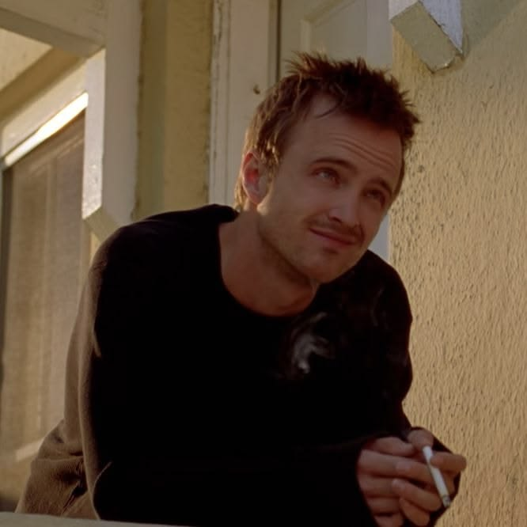
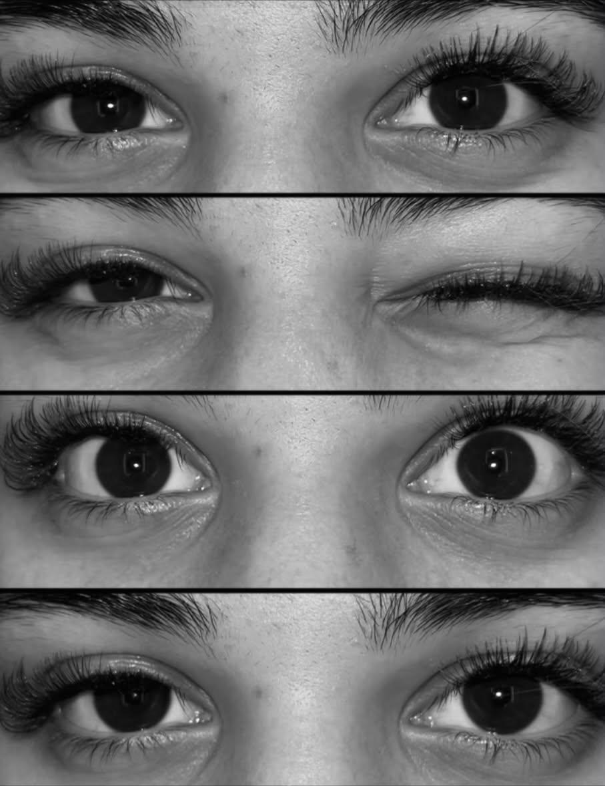
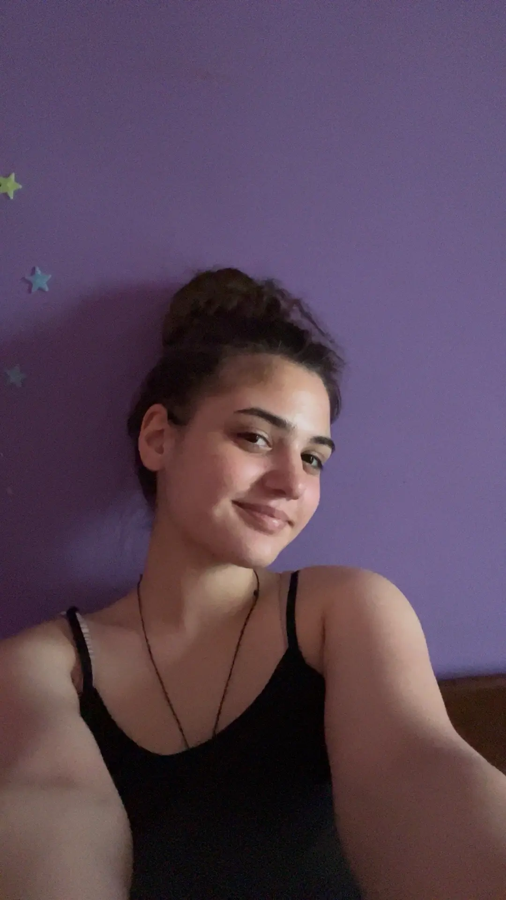
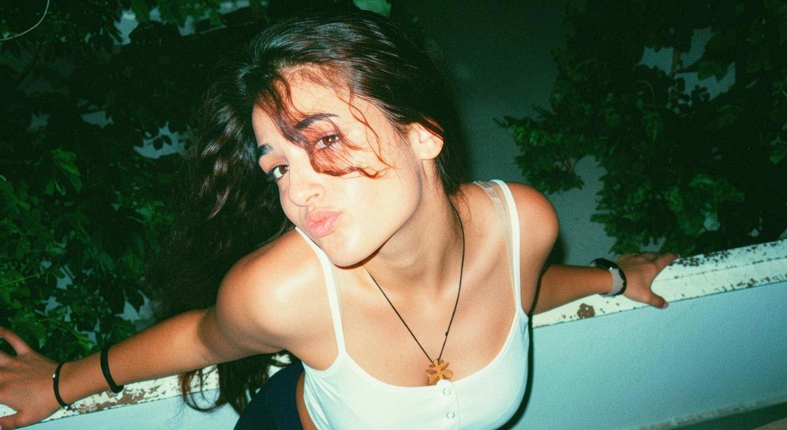
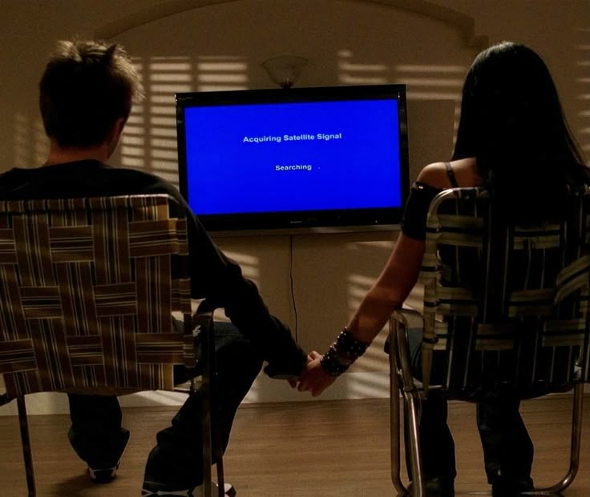
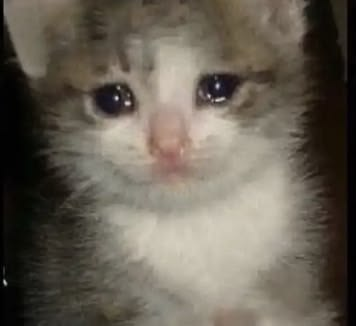
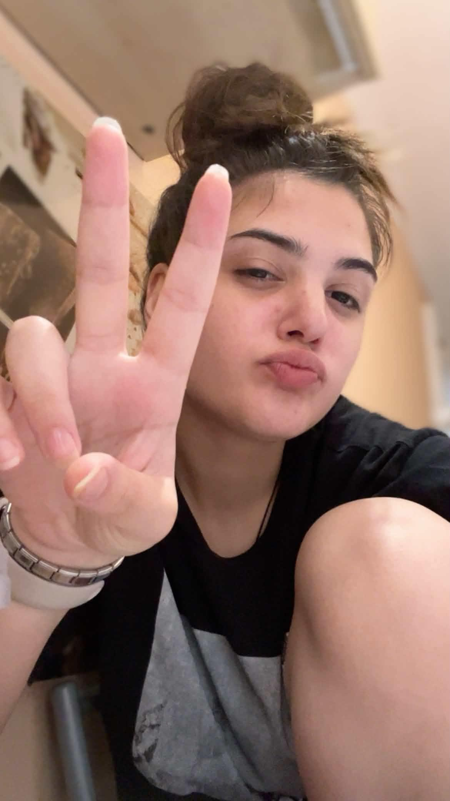
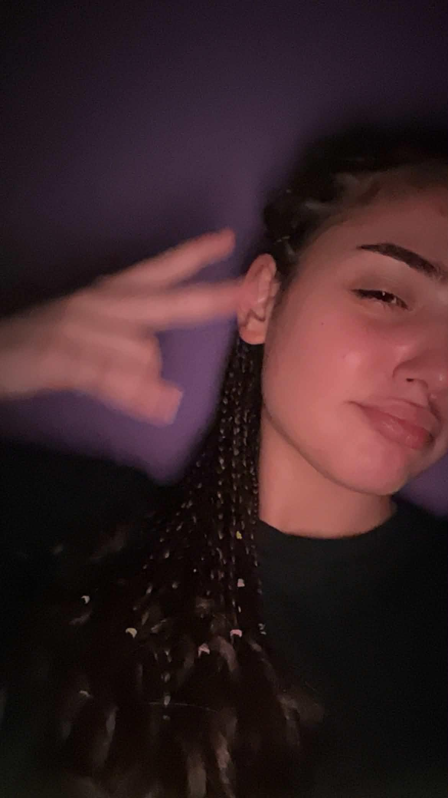
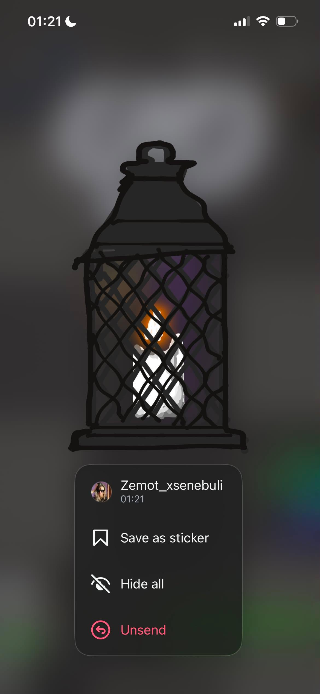
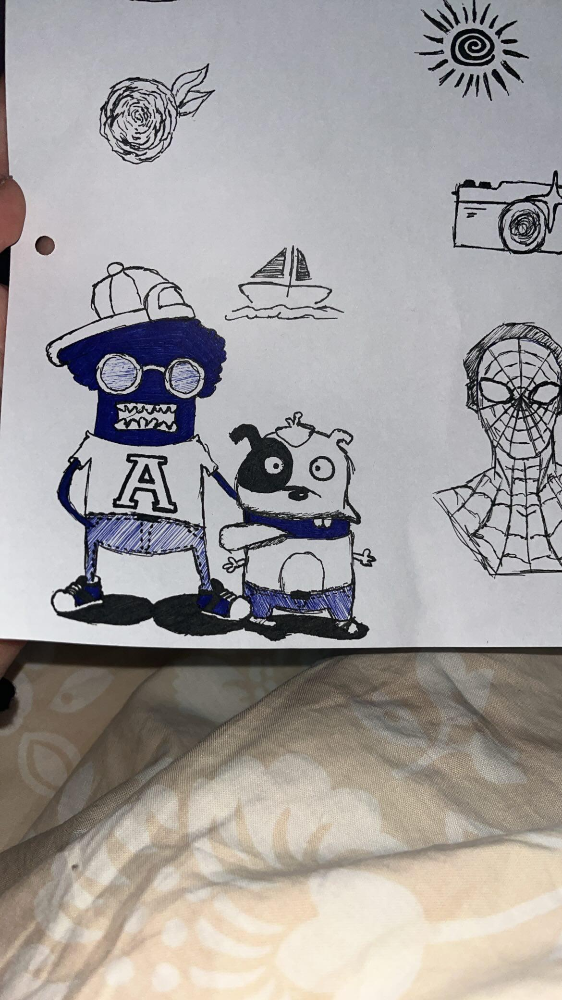
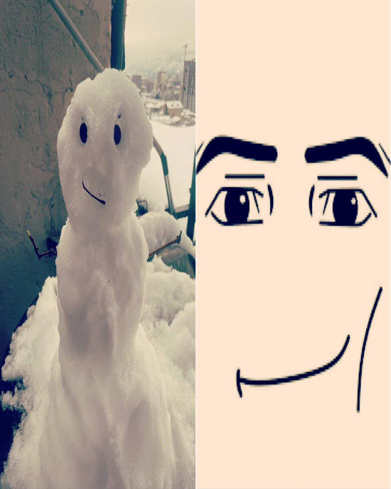
ნუ ამის გაგრძელებას აღარ უნდა ვწერდე წესით მარა დავწერ ჩემი რა მიდის. sooooo, umm ngl პირველი ტექსტი თუ რაცაა ძაან გრძნობებზე დაფუძნებული გამომივიდა და ძაან არ მინდა რომ ეგ წაიკითხოს იმ x პიროვნებამ, იმიტორო I might screw everything up... umm anyways დღეს ცოტა რაღაცნაირი დღე იყო. ხან ცუდი ხან კარგი. ბოლოს ისევ ცუდი მარა საბოლოოდ ისევ კარგი იყო. დღეს თავისი "დღიურიდან" ნაწილი ჩამიგდო, სადაც ეწერა რო თავის თავში ვერ ერკვევა და არ უნდა რომ მაწყენინოს თუ რაღაც. სიმართლე რომ ვთქვა ვერაფერი ვერ გავიგე მარა კაი. ნგლ გული მიგრძნობს რომ ყველაფერს გავაფუჭებ ჯერ მარტო ამ ჩემი ნაწერებით, იმიტორო ამას რო წაიკითხავს.. ამმმმ შეიძლება ეგრევე დამადოს.. სოოუუუ..😬დღეს ასევე ვუთხარი რომ ის საშინელი გამოცდები ჩავაბარე და იტირა🥹 ანუ აი ძაან არ მინდა რომ მართლა გავაფუჭო ეს ყველაფერი რა, არ მინდა რომ ეს მეგობრობა დავკარგო ჩემი სიდებილის გამო. თან მითხრა რომ სანამ გამოცდებზე შევიდოდი, ხატებთან იდგა და ლოცულობდა🥹 არვიციი რაააა, მერე კიდე ჩემი ბრალი როგორაა ხო ვიძახდი თავისით მოხდათქო😭 წინა ნაწილში კი ვთქვი მარა კიდე ვიტყვი ეხლა მოკლედ რა რო თუ ამას მართლა წაიკითხავ ოდესმე, არვიცი ზუსტად წავიკითხებ თუ არა მარა ᲗᲣ წაიკითხეეეეე... რავი იცოდე რო ძაან მადლობელი ვარ შენგან. ბოდიში ამ ყველაფრისთვის, ბოდიში იმისთვისაც რომ ამმ ყველაფერს ესე ტექსტით იგებ, მაგრამ რა ვქნა რეალში ამდენ რამეს ვერ გეტყვი.. ასევე ბოდიში თუ ამ ჩემი გამოხტომებით ჩვენ ურთიერთობას გავაფუჭებ. მართლა არ ვიცი შენ რას ფიქრობ ჩემზე, კარგს თუ ცუდს, როგორ მიყურებ, როგორც უბრალოდ მეგობარი თუ უფრო მეტიც. ანუ ვიცი ზედმეტები მომდის ეხლა მარა ხომ უნდა გავერკვე🥲 დაჟე შეიძლება როცა ამას კითხულობ ეს ყველაფერი, კითხვები ნათქვამი მქონდეს, who knows. anyways რაც არ უნდა იყოს ყოველთვის შენ გვერდში ვიქნები, მართლა სულ რო დამარეჯექთო ვერ დაგიკიდებ. ძაან დიდი მადლობა ყველაფრისთვის, ამ დღევანდელი დღისთვის და ასევე იმ მოტივაციებისთვის რომელიც მაშინ მომეცი როცა ყველაზე მეტად მჭირდებოდა. ვიცი რომ ეს ნაწილი უფრო მოკლე და ჩვეულებრივია მაგრამ შენ დაგპირდი მალე დავიძინებთქო soo.. მაგიტომ რააა. ძალიან დიდი მადლობა ᲧᲕᲔᲚᲐᲤᲠᲘᲡᲗᲕᲘᲡ საერთოდ და უუუუუზომოდ მიყვარხარ და გაფასებ, როგორც ადამიანს და მეგობარს 🫶. წავედი ეხლა დავიძინე. 02.08.2026 || 04:05
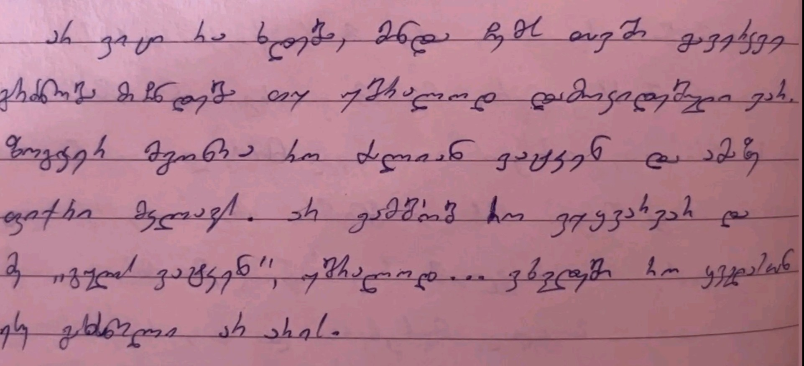
Thank you for EVERYTHING. Love you so much.